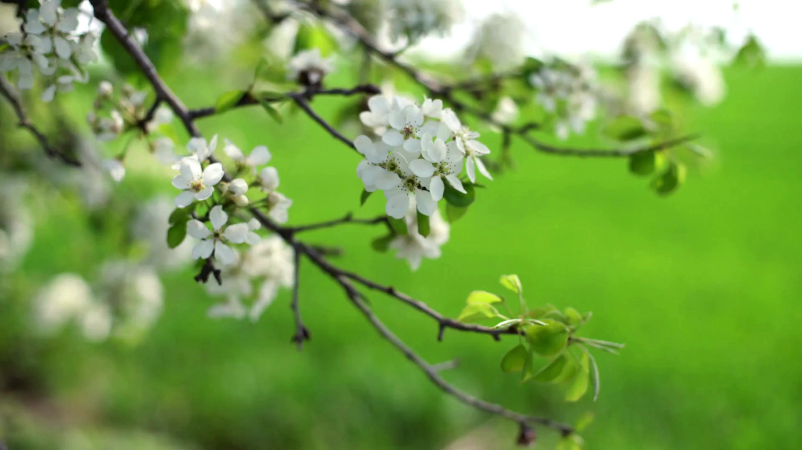

다음세대 교육철학Educational Philosophy
왜 다음 세대를 '당연히' 영어권으로 분류해야 하지?
저희는 질문을 던졌습니다.
물론 이해가 됩니다. 미국에서 태어난(혹은 오래 자란) 우리 자녀들은 한국어보다는 영어를 더 잘할 것입니다. 게다가 한-미 가정의 경우 집에서 한국어를 사용할 수 없는 환경이 더 많죠.
하지만 그 "당연히"라는 생각 때문에 우리가 놓친 것도 참 많습니다. 그중 하나가 바로 '부모-자녀 간의 신앙 전수'입니다.
성인이 되어 미국에 거주하기 시작한 1세 부모는 언어 장벽으로 인해 여기에서 태어난(혹은 오래 자란) 그들의 자녀와 '신앙 대화'를 이어 가기가 참 힘듭니다. 특히, 자녀가 커가면 커갈수록 말이죠. 아직 부모를 통해 하나님에 대해 배울 것이 너무나 많은데요⋯ 그런데 교회마저 '부모-자녀 간의 신앙 다리'를 놓아주지 못하고 있었네요.
그래서 생각했습니다
한인 교회에 EM(English Ministry)은 분명히 필요하지만⋯ 이 땅 어딘가에는 다음 세대(어린이, 청소년)를 한국어로 교육하는 교회도 있어야 하지 않을까? 그게 어떤 가정에는 "너와 네 집이 구원을 받으리라"(행 16:31)라는 한 언약 위에 한 가정이 설 수 있도록 돕는 길이 아닐까?
그래서 시작했습니다
다음 세대에게 한국어로 신앙을 교육하는 사역. 이 땅에서, 특히 교회의 '양적' 성장을 생각한다면 결코 시도할 수 없는 사역.
이 사역이 우리 교회에 자리 잡기까지는, 이 교회에서 태어난(오래 자란) 아이들이 줄기차게 한국어로 신앙 교육을 받고, 그들이 어느 정도 클 때까지, 자그마치 6~7년 이상 걸렸습니다.
그리고 우리는 지금 그 열매들을 아주 조금씩 봅니다. 이 교회에서 자란 청소년들이 한국어로 설교를 듣고 나눔을 하는 것을 보며, 그래도 서툴지만 그들의 부모와 한국어로 신앙 대화를 하는 것을 보며, 그리고 그 청소년들이 그들의 동생들이 한국어로 예배 드리는 것을 돕는 모습을 보며, 우리의 생각이 (은혜로 말미암아) 아예 불가능한 것은 아니었다는 사실을 조금씩 깨닫습니다.
그러나 우리는 여전히 걸어 가는 중입니다. "여긴 미국이잖아요." "다른 교회는 왜 안 했겠어요?" "그럼 누가 이 교회에 오겠어요?" 우리 내면에 이런 질문들이 들려올 때에도, '누군가는 해야 하지 않겠어?'라며 오늘도 묵묵히 이 소명의 길을 걸어가 봅니다.
우리는 그런 비전을 가지고 있습니다.
부모와 자녀가 한 언어로 함께 신앙을 나누는 것. 우리가 그 유익을 누렸듯이.
신시내티 중앙장로교회 · 담임목사 주예찬